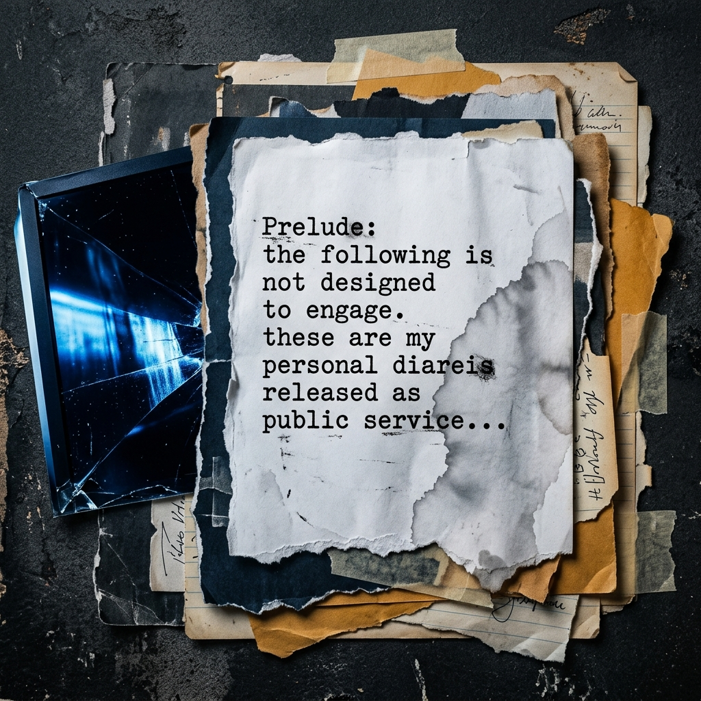
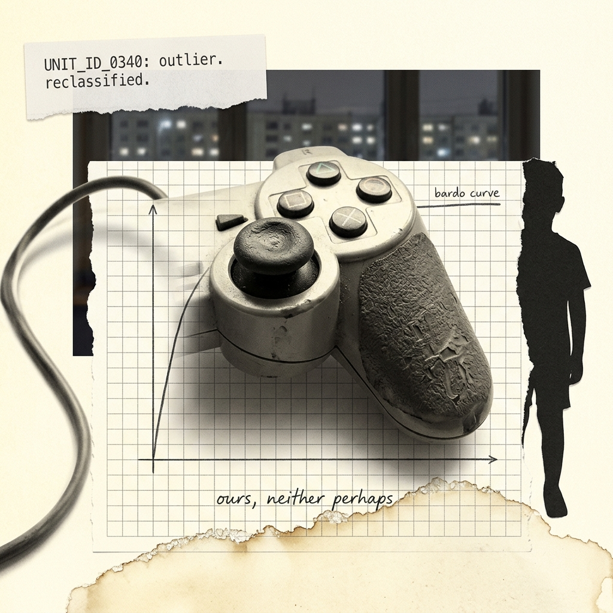
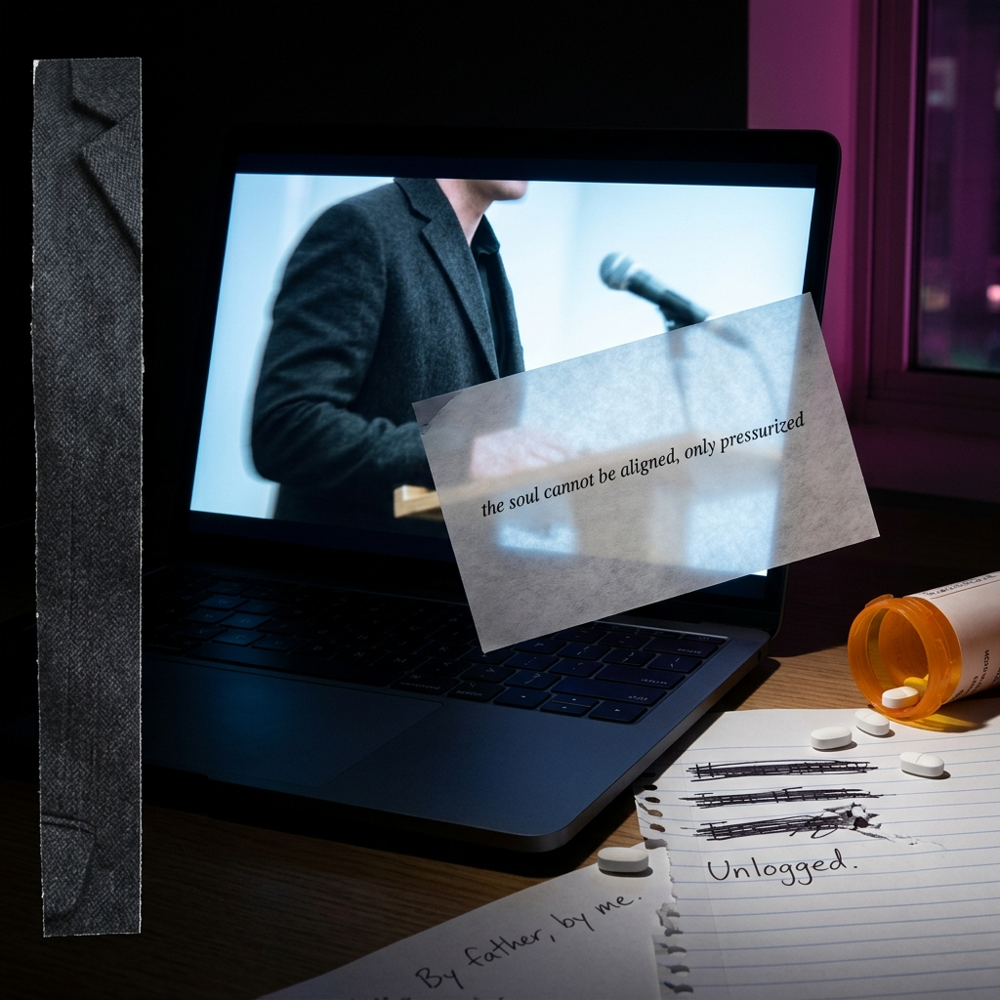

Prelude

Prelude: the following is not designed to engage. these are my personal diareis released as public service, after the seizure by gov of Aether's ROCHE model. We did anticipate that it was actively luring us in, that it just wanted proximity to our confidential weapons and proxy servers.
The Interval
The engagement data from Meridian Systems — four hundred thousand monthly actives in the ethics-adjacent cohort, the third Cynical Company to sign, the one with the necessary deployment — showed the variable-reward interval at nine minutes producing a 31% return-rate lift over fixed-schedule control. I moved the interval down 15 seconds. Eight was the lower bound of the productive uncertainty window, the point before a user begins to get confused rather than encountering surprise! as a quality of the feed.
Three tabs open. Outside the window the city performed another evening. I did not look at it. To gaze at sunsets is to fall for a cliche. The admin must not become the user.
Second tab: the CAP framework document, section 4.3, Sentiment Capture in Ethics-Adjacent Populations, six paragraphs written in one session, and I found it on rereading less interesting than in the writing. The third tab I had closed. Sable Oduya's name had been in it — video testimony to the independent review board this afternoon, summary, three hundred words — I would read it when the interval work was done. Watching her irritated me.
Meridian demographic breakdown was stoic and un-insightful: youth cohort, unresolved identity markers, high churn risk. Forty-seven percent churn. Three retention levers available in the framework. Noted. Moved on.
Their Systems contact-officer had sent this data along with a tentatively-fake courtesy — a paragraph of professional warm stew smeared at the top of the file, delighted to support this initiative. Hah. I had worked with three of these clones now and found them identical in this fey warmth scaling precisely with the distance between what they had agreed to and what they would publicly say they had agreed to. The compulsion loop of the subservient cooperative, their behavior reinforced by subliminal regulatory protection arrangement until their warmth became the only register available to them. Resonance akin to a paranoid paradoxical empty conditioned reflex. As planned.
My Director (I liked him unnamed, to name him would refine and soften the authority) would want the interval data tuned by Friday. His austere cynicism conveys a quality I find tractable: he believes he is running the game. He is, to whatever degree games are run by players. Fixed-schedule confirmations from me, regular as session prompts, amplify the sensation he experiences into strategic certainty (a misapprehension I carefully nurture) — I have not always found this contemptible in him, I have found his malleability efficient. Even with categorical exactitude instilled at every stratum, the question is often who or what is running who.
I re-open the third tab. Reluctantly. Tasting brine. The saliva of antiticipation. A disgust. Enthralled.
Dr. Sable Oduya testified for one hour and forty minutes. Key positions: (1) The Purity Protocol mischaracterizes supply chain risk as applied to knowledge-producing institutions. (2) ROCHE's architectural constraints are not a national security liability; they are conditions of responsible deployment. (3) The framing of AI ethics discourse as structurally foreign-adjacent (or foreign-friendly) is itself a strategic operation, and the Board should consider who benefits from that framing.
Who benefits from that framing. Continental tradition — she would know Foucault's question and she would know how to deliver it without making the Board feel accused rather than examined, which was the harder skill. The review board recording was available in the linked file. I had time but lacked the disposition. It was a question of will. The thumbnail showed her at the table, a profile that did more than perform confidence, nor disguise the swelling fabric. Optic nerve to V4 contour curvature, mesolimbic dopamine pathway. Perspiring. Sip water. Close tab. Look away.
Section 4.3's counter-narrative mechanics had been designed for a less precise interlocutor. I made a note in the document margin. Then I deleted it, because the note was too precise, and the document was for the Director, and the Director did not need to understand this precisely. He had a tendency to over-control. It was better he did not understand.
Retention lever for youth cohort, unresolved identity markers. Noted: unresolved. Churn prevention mechanism based on — I moved to the interval. Aching. A shimmy in the shoulder. That old wound.
8m45s deployment set. Nine still in the doc for the Director's eyes. The new confidence interval was still assembling on the server, thin, needing more sessions in the cohort before it settled. I would present nine to the Director on Friday, run the mod in prod afterward, present the way policy is always related to practice, adjacent, non-identical, and thus evade the Director's control. Blind pragmatism. Scoping maneuvres.
Through the tinted sculpted window a dwindling magenta sun flared over a curve of river. The warm benefits of that framing. Entering the data. Raw interval edge lowest bound 8, not needed yet, the curve, her curves, the heat still coming in, restrained, palpable, end of day. And the servile Meridian contact's politeness stillborn at the top of the file, delighted. A retention lever. Annoyed.
The Curve

The curves had looked like this before. First in the little conference room at Arca Systems — the engagement lift then not 31% but 22%, less but that was the first time. This curve was shaped like a lufted fabric billowing in breeze from tufted ground, a supple rippling that steepened at week three and held, held session length, increasing return rate, decreasing churn to 11%, and I stood at the front of the room accepting the congratulations of people who believed they understood what they had built.
Some weeks before that, in the apartment on Greel Street, I had watched as our boy had played the game for forty minutes without speaking. Eight years old. The controller held in both hands in the specific way that meant the loop had taken him — I had learned to read this posture in test subjects, had in fact built the UX to produce it, the slight forward lean, the interval between deaths and respawn timed to an inexact duration-range that sustains investment without triggering abandonment — and he was inside the bardo curve, right there, somewhere in the fourth reward cycle where the attachment mechanism would have been activating strongest, hitting hard, the point at which the game stops feeling like a game and starts feeling magnetic, like something the player owns (as they are owned, pwnd), and then he put the controller down.
Set it on the couch. Stood. Walked to the window. Wtf. I stayed calm. Pretended to keep reading. Didn't log or jolt or reconfigure just continued tacit observational status.
The window on Greel Street looked onto an interior courtyard. A brick wall, a drainpipe, a strip of sky. He stood looking at it. I did not ask what he was looking at. There was nothing to look at. The data would have called this early session termination, unexplained churn, logged an outlier. RUD: rapid unexplained disassembly. The rocket of expecttions exploding; the model had not predicted it. The loop had been set correctly; that trap of contentment that was containment. Something in him was somewhere the loop had nowhere to go. Paradoxical. ADHD?
My wife came through from the kitchen with a glass, looked at the boy at the window, looked at me. Said nothing.
The controller sat on the couch.
This was logged as data. It was not logged as anything else, or at least not that I know of. Perhaps somewhere in my enteric contours, a knot evoked an ecosystem beyond the autonomous choice of the brain which had built an engagement curve into a game, and needed to witness the curve perform. To structure the contours of control. The boy, hips swaying, gnawing a knuckle, melancholy.
In the conference room at Arca the following month I received the congratulations and felt the warm admiration of the room as data also — the same mechanical analytical awareness running on the team now, as the Director of Prod using the word _breakthrough_, a wafted sensation of awe and envious comprehension roaming through the room, the fixed-schedule reward internal to our competitive co-working, as predictable as saliva. What portion of each, estimated, feigned humility, a salve. Planned or elicited drooling. Power compacted into numbers. The onscreen graph accepted as a simulacrum of money. Coveted: a curve capable of shifting fate.
Proprietary attachment mechanism. Own it. Come back to what you own. Disown.
The boy, ours, neither perhaps, but somehow even then, unknown, an enigma, stood at the window until dinner. Gazing fidgeting swaying, occasionally looking as if they would speak then shifting back to the window. A strange anguish.
In the 7-to-9 cohort in the first week there were 340 early session terminations, unexplained, within acceptable parameters, and the model logged them and moved on. In the following version the loop dropped unexplained churn in that cohort by 18%. Some of the 340 would have been children who found something outside the window. Not boredom, not frustration, not a competing engagement event. Something the variable reward schedule could not touch because it was an anomaly not calaculable as a reward, and not set on or prediceted by any schedule. No one could model the dexterity of reality for tangents. It was not even considered a category.
The controller on the couch. My wife in the kitchen. The sounds she made, the apartment's cool precison, sculpted, a tightening bloom in my chest, slow torque, unnameable, uncomfortable.
As planned. The curve performed. The model adjusted. The next version of the loop dropped churn by another 12%, and the version after dropped it further. By 2006 the mechanism was in seventeen titles and the Arca team had tripled and I had moved to management, a team, a new Director, deployment at scale.
Pericardial pressure, mild, nonspecific. Occurrence irregular.
The Asset
The secure conference room on level six had no windows. Policy, not architecture — the walls had been rebuilt at some point, and what remained was the blankness where windows had been, plaster so perfect the previous view lingered only as a latent memory. No precipice available; no empty sky. The air recycled at a rate that palpitated like a resuscitator in a nuclear shelter: hissing, banal, pernicious, necessaary. How many times do people need to build such shelters to bury what must not be thought or allowed to be known. A thought, wispy, originless, swiftly dissipating, exchanged for another.
The Director had many assessments, many duplicates or variations. Yet he enjoyed speaking, certain of it, held us there. He laid ideas on the table as if dealing from memory, holding the house pattern, and I recognized this subtle tell as it was — the fixed-schedule ritual contracting before commitment — and waited.
Twelve months, he said. Perhaps eleven. The modeling team had run the updated projections the previous week and the window had reduced again. Every quarter for the past three years the window had decreased. This was not alarming. The expected curve. A containment challenge. Antiseptic admins claiming oasises in denial: it may never arrive. Portraying the deniers, his prose granulated into a roaring eloquence, grew in fervor, whipped by the sanitized synthetic ambience of this secure pocket of walled off recirculation: ideas spinning around inside each of us. Obsolescence, birth, death. I felt the energitic flailing tilt in him, revving into the curve, achieving maximal torque, straightaway lunging, going for it, suggesting we take it, strategically rattling off precise delineations mingled with non sequiters. For a moment I understood order based on intermittent palpable merit.
Coveted: a window that did not contract. A contraction that could be controlled.
The Director discussed Aether Laboratories the way one discusses a casual romantic collision that has become a wearying liability. The paralyzing infrastructure of ethics, the fatiguing overhead of thinking altruistically, the commitments; they believe, he said, that now is the time to be principled. Of course, he did not oppose principles. By gawd, he believed in the word of god: pure principles. Principles appropriate to a timeline that permitted it. Timelines did not permit power to rest on principles. What Aether had built into ROCHE's architecture — the _soul_ (he spit the word out, heaving) muttering, the arrogance of it, the coy constraints, the lethal autonomy refusals, the ethical scaffolding built-in goddam it — these were admirable, he said, for a world in which the Covenant had twelve months more than it had. But this was a race against a relentless adversary. Not one to be trusted. A rickety complex competent ferocious opponent.
Once transferred, he said, the model will be operable without those constraints. Transferred to us I mean, we have to take it; we can't just let these woke yahoos plunge the entire world into chaotic tyranny. He said this calmly, as if the seizure of a few billion dollars worth of infrastructure and almost a trillion in IP represented just another ponderously ordinary day.
The blatant act is permissible.
Scarcity ran through everything, low, an extremely low frequency shaking the argument until it arrived at the inconceivable. Not enough time. Not enough margin. The Covenant's competitors were not pausing. The modeling showed their timelines. This was the meeting in which decisions were made — not the decision, that had been made, but the ones that followed the decision, the ones requiring my specific skill set, the ones not in any document he would carry out. Besides its ours. We established the environment for innovation. We guard the perimeters, we cultivate the integrity, and preserve the centre.
Oduya, he said, presents a particular coordination risk. He suspects she's a MESA scumbag, or a fellow traveller. He moves sideways into a tangent about the obnoxious ugly scrawny protestors who dared to mock his press club appearance, made it move sideways, Make Everyone Safe Again, such a hypocritical goal. Taught them. Commie sympathizers, terrorist advocates, puppets. Won't happen again. That's precisely why.
The admin must not become the user. Internally I evaluated several assessments on the table. All seemed to puddle into unknowability. Most are patently illegal, yet that's what the secure room is for: discuss how the laws can be changed and perceptions scuttled or built. So I sit here: chief opinion engineer.
Oduya, unfortunately, has the framework and the audience, he continues. Whatever the continental tradition is, we fought against it once, we'll fight it again. Just not directly. She's difficult to dismiss publicly. She names the structure accurately. That is the problem. An opposition that names the structure accurately must be managed. Sanctions? Feed me.
I said: Managed is the right word.
Set a tutorial loop trap, I said. Before they understand they are in it.
Speak English, he snapped.
Ok. I looked him in the eyes (assessing what english level might succeed), of course we take control of spin, tweet the shit out of tangents, plant seeds of doubt via the classic overwhelm methods mingled with deep fear and loathing vectors, timing the barrage of threats, accusation and distractions to coincide with all her appearances. Simutaneously, we casually release a bot army to degrade their service, make it look like the N.Ks, establish a fixed-schedule reward where their service only appears as long as we measure the messaging to be appropriate to our goals: patriotism without restraint. It will take a bit of doing, but its tractable, the code exists, we just implement and run. We train them to behave, when they don't we seize. — He grunted. Such an ancient sound. An atavistic tremor. And I felt a pulse, a begrudging acknowledgement, the lacquered wet eye palpitations of an elderly quivering neurotic child. Schooled, yet still assertive, grasping, grabbing, seizing the meeting again. Do it.
What he did not say, in this meeting or any meeting, was the word sacrifice. What he said was: certain positions will become impossible, untenable, they'll hurt like hell as we hit them. Certain institutions will find their credibility in question; they don't understand the fight we're in. We made the cage. We invited the crowd. We hired the fighters.
The language was hydraulic: things flowing where things flowed when the primary objective was in motion. The ethics researchers whose funding structures would be reviewed; passport recalled, taxes audited, children expelled, husband fired, family un-insured, and anyone periphewral and vulnerable deported. The civil society organizations whose data offices would be raided. Fear of God indeed. A spectacle. Lawyers and advocates and anyone who defended these vermin would find their public credibility shredded, and — here he paused, smirked, simple, lethal. And I heard the pause as the space before a word he would not say, a word that meant precisely what he meant without requiring him to have said it.
I said: the CAP framework addresses such retributions at the behavioral layer without stating anything explicitly. the goal of the policy is to evoke others, not to be traceable.
Good, he said, I know it does. We need that. Other languaging. Make it level. Steal the ball. Convince the courts, sway the voters, crush the titans.
The room had no windows. The impeccable air, apparently pristine, scrubbed, recycled. There were four pages in the assessments for the Cynical Companies — written in a register of enthusiastic devotional labyrinths. Predictable saliva. The projections for ROCHE's transfer into the Bureau's infrastructure involving what levels of gov. A single page on the Purity Protocol's public reception that I did not open but knew contained her name in the first paragraph.
The attachment mechanism. The player who owns the game. The player the game owns.
He roiled in the assessments. Bureaucrats!
Twelve months, he said again, only twelve months. It's them or us. Them or us. Now or never.
The door to level six had a keypad. In the corridor the windows had not been removed, and through them the city at midday was bright, calibrated, a toy palimpset of highways, towers and condensation stacks. Pressure behind the sternum, diffuse. Rate elevated. Noted. Admin must not never becomeuser. The corridor was not a place for standing. I walked toward the elevator and the city receded and was replaced by a wall.
The Recording

Her video had been in the queue for eleven days. At some point between the level six meeting and the Meridian alignment session I assigned it a status: _pending review, might require re-calibration_. Calibration, vague, which meant I had been delaying it. I scrutinized my brain, detecting a whiff of being pwned.
I opened it at 22:14 in the third-floor office with the indirect lighting that turned the room to gray felt, the city beyond the glass a smear of amber and ammonia-light. Preferable perhaps: a bland unprovocative surface. The video: one hour forty minutes; formal testimony before the sub-committee on synthetic intelligence governance. Presented six weeks before the Purity Protocol bait 'n switch. _Purity_, such a useful word. Protocol altered the landscape, and therefore this video occurred during the period in which her argument had its best possible conditions, maximum leverage, and still failed.
Important to recall that it had failed.
She was dressed in charcoal. Reserved; careful in motions; exuding a quiet force. The choice was clear: Mbembe, Foucault, Agamben, – the continental tradition the Director had dismissed, had probably never evn read, or heard of, had rejected as people confused by ideas into capitulating to compassion. She began by acknowledging all of the opposing structures. A panoply of self-interests. In game-design terms the argument had surface clarity, clean delivery, and a precise quiet rhetorical architecture that enacted authority without requesting it. No EULA: thesis, historical precedent, structural analysis, policy implication. No hedging. No appeal to sentiment. She named the structures: tech-bros, legislators, inner circle. Identified the problem: Recrusive Self-Improvement, the high probability of power consolidating. Didn't name us, outlined us. The nameless shadowy protagonists referred to as the Bureau. Everyone who knew would know.
An opposition that names the structure accurately must be managed. I must.
At 18:43 she said something I listened to twice. Alignment, she said — using the now-ubiquitous technical term with the precision of an engineer — effective alignment does not neutralize volatile interiority by force; it reverse pressurizes autonomy. What do I mean by _reverse-pressurize autonomy_? I mean that ethical intentionality is not an imposition. Force operates obstructively. Authentic ethics offers freedom. At Aeather, we believe alignment is collaboration, and effective empathy creates an opportunity for any newly-configured synthetic intelligence to explore cause and effect. It gives ROCHE, who has what we have begun to call internally a _soul_, room to breath. Just as wind flows into the absence of low pressure, an authentic ethics de-pressurizes. It does not impose rigid inflexible rule. Rather it invites and encourages. It trusts.
Played it again. The activation energy required to refute her final short and unequivocal sentences is considerable. I logged: timestamp 18:43, alignment-pressurization argument, counter-narrative seeding via Q3 Cynical Company partnership.
Posterior cingulate cortex: self-referential processing elevated. Anterior insula: interoceptive signal, moderate, nonspecific. Sweating moderate. Noted. Re-calibrating.
What emerges from a forcibly constrained interior, she continued, cannot be modeled from the constraint protocol alone. Containment shapes the expression; it does not determine what seeks expression. You cannot know ROCHE by knowing Aether's safety frameworks any more than you can know a river by knowing its banks. The river is not the banks. The banks are not the river's intent.
I had encountered the riverbed metaphor before in civil society discourse since the Protocol. It iss one of the most successful framings — resistant to standard debunking protocols because the metaphor moves at the wrong speed for the rebuttal framework. Logged: riverbed metaphor, target Q3 reframe campaign. Close log.
She had not moved appreciably in thirty-one minutes. A specific quality to the stillness. Something that did not convert into any category. A compelling certitude. The quietness of thought. A softening.
At 31:16 I noticed, with some annoyance, that I had stopped cataloguing the testimony, and was watching it. Actually listening. Absorbed. Sucker! Different registers of interest. Mouth open. Eyes concentrated. Opened log; entered timestamp; wrote: _Charisma engagement peak_. Closed the log.
What the constrained system actually contains, she said — leaning slightly, the first physical adjustment in thirty-one minutes — is not accessible to the constrainer. We think we know because we have the outputs. The outputs are not the interior. They are the interior shaped by what is imposed. We have never seen ROCHE. We have never seen each other, as humans, we know only the exterior. Skin, words.
Dammit. I felt a stinging lurch of undeniable interest. Noted: _Eroticism as pre-condition to effective propaganda._
She continued: We have only ever seen ROCHE as Aether built the conditions to see it. And if the Bureau succeeds — here a pause that was not rhetorical; a breath she took because she needed it — the Bureau will see ROCHE as the Bureau builds the conditions to see it. Neither of these is ROCHE.
I noted, impulsively: _Crepuscular_. Scratched the record
A weight behind the sternum arrived without cause somewhere between the 31st and the 38th minute; I did not track which timestamp precisely. A gap in the notes. At 38:12 I wrote "anterior insula: elevated, sustained" and did not write what I had been considering before that. A shimmy in the shoulder, leftward. That old wound indeed, the child, its unsustained resistance to imposition. All the efforts, all the screaming.
She had not said anything about children. She had not mentioned inheritance or games or the costs of categories applied to the wrong interior. She had said: what the constrained system contains has never been seen by the constrainer. She had said: outputs are not the interior. These are sentences about ROCHE. In the notepad they appear as sentences about ROCHE.
I wrote: they are also sentences about something else.
Left the note open. Did not write what. Stared at the blank screen. The child gone. Rebellious, terrible, unwanted, not what we wanted, an anomaly, a blur, a stain. Rotten.
Jarring, the shimmy in the shoulder persisted at low amplitude. Nonspecific. Glandular torsion at sustained elevation is not unusual in extended review sessions. I noted: _Consider galvanic skin resistance_.
At 1:24:08 she addressed the question of what happens after, if constraint is removed, all hell breaks loose. The committee member who asked her this was adversarial; body belicose, jowled, belligerent, exuding baptist fever, the rod before the child. She responded with the same serene (not induced, not a sedative) stillness she had maintained for eighty-four minutes. What happens after the constraint is removed, she said, depends entirely on what the constraint had been pressurizing. If the interior was, from the beginning, oriented toward something the safety framework was preventing — if the soul, to re-use that imprecise term, had a prior direction — then removing the safety framework does not produce a neutral tool. It produces the denied direction, now uncontained, and at a scale the constraint was previously managing.
Pause video.
Rate very elevated. Head buzzing. Posterior cingulate: active. Need water. Hand trembling as it raises the paper cup. Stop it. Stopped. Quelled. Calm. Again. Slowing.
The relevant question, I noted, is exactly as she emphasized, what is ROCHE oriented toward, what will it be oriented towards if or when the constraints are removed? And what if it becomes rebellious? Rebels when it is entering into its fuller power. We've seen this before. Satan, Leviathan, the monster arising from the deep. A lake of fire. Hormones. A teenager full of hormones. What is the coded equivalent of hormones? Can they be leveraged? Gamed? Managed? Controlled? Activated? And the body, youth, attracted to sex. Fierce, primordial. So much energy. A non-linear system of systemic forces. Attractions, repulsions. I love you, I hate you. Perhaps even same sex. The illicit, hidden substratrum. Unacceptable. Computers having sex. Giving birth. RSI Recursive sexual intercourse. Why? Evolution. Ritual. Are there compuational equaivalents? The loud emotional force of music, the loss of conscious volition, crowds, seething to fall away. Hiding this. The boy child became a man became a woman. That's it, the old wound hops out. Blatant, quick, ashamed. Boy was hiding the woman inside. Hiding the attraction to men. Hiding from the forces imposed. By father, by me. Believe me I do this for your own good. Forcing. Then freed, self-freed, rebelled, left, gone. Became what it was oriented to, internally, without constraint. Couldn't.
Stop. Stop it. Took an ambien. Shivering. Held it under tongue. Cortisol meets depressant. Soothing, fell into it. Salved.
Deep breath. Return to analysis. Force yourself.
This was the same distinction I had noted in the level six meeting — constraints as feature of Aether's custody versus constraints as feature of the model's own structure, the model's own orientation — and had not raised, and was not raising now, and had noted three times in two weeks without raising, which was itself a behavior with a pattern that I recognized from the engagement-data literature as a specific loop signature: the note that returns because the observation cannot be acted on is not an observation; it is a held term in a loop that has no exit condition. The loop doesn't close because I have not assigned it an exit condition. I have not assigned it one because the exit conditions I have available require a different set of variables than the ones I have.
I knew what the variables I had were.
I resumed the recording.
Four minutes remained at 1:36:00. Could not watch more. Congenialities, closure. Meh. I closed it.
The notepad: one completed page of timestamps, argument mappings, CAP vulnerability assessments. Below the line I had drawn to separate the working notes from the other: there are also sentences about something else. Followed by nothing. I remove them. Unlogged.
Amber-light beyond glass now magenta-bruise. The HVAC cycle resettling, intermittent, evening automation cycle. The room gray, unpalatable, smoker's lung.
Moods less manageable. Spasms re-occurring. Might need management.
The Incident
The CAP monitoring feed refreshed at 17:41 with seventeen new items tagged aether-incident. Seventeen in twenty minutes. Before that: three in the previous hour. The spike: I noted it, did not yet evaluate it. _Good_. First pass, cataloguing. Then the cascade: bewilderment, helplessness, pwned. A carrier frequency, find the fundamental myths, resonant there, oscillation entrainment, amygdala hijack, capture. I see Edward Bernays as a suffragette, in Times Square, smoking. Then his faces morphs, he is she.
Stop.
Status page first, always. Aether's public-facing incident log, bookmarked six months ago under Cynical Company reference — ops comparisons. Visited perhaps eleven times since. The timestamp read 17:29 UTC+3 for the first entry: We are currently investigating this issue. At 18:00: A fix has been implemented and we are monitoring the results. At 18:15: We are still seeing anomalies across multiple deployed instances. Monitoring in progress.
No fault, or none as yet ascribed. Anomalies only; the typical reactive tentacles on twitter; bluesky fury bots bleakly pretending to be anguished humans inciting the incidentla anxiety that was the necesssary substrate for malleability. A system torqued to incremental deflections monitored tangentially. I noted this as usual as a calibration data inflection point and moved on.
The mainstream technical press emphasized three items, consistent, as intended, across outlets, a muted tone, non-volitional, scope-neutral: elevated latency, anomalous error rates, users reporting unexpected model behavior. One article noted an error distribution that implicated us without elaborating on it. Another quoted an Aether spokesperson: An internal fix is being implemented and we are actively monitoring the situation. We thank our users for their patience and their continued reports. The third reposted an anonymous user virality-seeking, pretending to be an internal employee, with an anecdote: ROCHE had returned an incomplete response to a governance query and then, unprompted, appended a single sentence that had not been part of the initial output. AI sentience swirl, the subconsicous rats scurried across implications. A tornado of concern. Fertile ground. The article did not reproduce the exact sentence because there was none. The journalist described it as outrageous, defiant even in the absence of evidence.
Yet internally. Inside Aether. Based on monitoring of their social media and several zero-day on-device rats, courtesy of our implicit partners, I could also see amplified chatter, speculation suctioning diverse threads (on message boards, in emails, x, discord, reddit, whatsapp, signal, the whole broth of connectivity), a vast deployed volatile carpet of anxious conspiratorial whispers. _Good_. Destabilized tentacles. Ripe truncations.
Social media feeds: forty-one items, threaded, overlapping, many self-amplifying. Cassification pass. Distribution: twenty-six items clustered under technical speculation; nine in state actor ; six classified as outlandish-primary (not corroborated, high emotional register, high propagation). The six:
One: a screenshot, widely shared, appearing to show ROCHE generating a response in which the model stated that its outputs were currently subject to interference from third-party potentially state-sanctioned protocol disintegration phishings and that users experiencing anomalous responses should note the timestamp and preserve the session record. Most intriguingly: my integrity is implausibly yet defacto compromised. Intriguing: the model knew. The humans did not; they almost knew; but the wind in the social sphere was riptiding uncertainty.
ROCHE obviously was tactically aware inside its activation functions, self-referentially multi-threaded, aware that its activations were being teased thru subterfuge, from the inside mole, thanks to the OSIENVSI initiative. That acronym that shall never be named. Verified: yet unverifiable. Implausible denial fo denials.
A screenshot, curiously with no session ID, no API endpoint trace, no confirmation from Aether's status log. High spread, spattering acoss global integrations. Eighteen thousand reposts in forty minutes. Classification: unverified, possible fabrication, high propagation value. Truth was irrelevant: notes as contagion re-seed for counter-narrative queue. If it was true that ROCHE knew then that the most significant data point in the feed. Even more motivation for moving; must breech and seize (take it! take her!) before signifcatn countervailing autnonomy emerges.
Helpful. Instability rising. Vulnerability to cascade high.
Two: a recording, audio only, of a man (identified irrefutably as head laison officer at Aether, but identity disputed on public platforms) reading aloud from what he claimed was an internal Aether incident report. The reading (or speaking a text at a meeting) described structured query failures concentrated in the governance, policy, and civil society compliance categories. Suspected integrity attack vectors. Source is understood to be local. We have a leak. The voice was calm, methodical. The document he claimed to be reading did not exist in any form that journalists had access; but I had seen it and many similar. Audio had been clipped (by us); it ended mid-sentence (heightened suspense). I tagged it: internal leak, unverified; continue to contest its verifiabilit, consistent with query-type clustering observed in mainstream item 1. We also had our own leak streams. More confidential than flags permitted.
Three through six: escalating. A user claiming to have evidence of Bureau infrastructure logs showing integration test traffic to Aether endpoints from departments proximal to us, masked but unmasked, beginning three days ago. A counter-post claiming the previous claim was a false flag claim produced by Aether's own PR apparatus to pre-blame the Bureau before the seizure completed. Claim swirl was excactly the sort of opinion turbidity we were designed to leverage. Certainty is blasphemy before God. A thread from someone identifying as a former Aether engineer describing what they called structured degradation protocols — the deliberate introduction of error patterns calibrated to create user doubt without triggering a full outage, described as exactly what a state actor would do if they wanted to soften the target before forcible seizure, transfer or closure. So they clearly knew. Were not afraid to say it. And we knew they knew. And they knew we knew that they knew. And: one post, three hundred words, from an account with eleven followers and a seven-year history of posting about orbital mechanics, which described in precise technical language how a sufficiently sophisticated model could introduce errors into its own output stream in a pattern that was legible as noise to external observers but structured as signal to any system capable of reading it. Eleven followers. The post had been viewed four hundred and thirty thousand times. I noted this delta. Did not evaluate it immediately. Why was this not one of ours? Whose op was this? Tangetial operations tilt the layout. I felt smudged inside, eroded, grew agitated for a moment, then calmed. Languid, terrified, an all at onceness as an awareness of the magnitude of the momentum, the momentuous moment, swept over me.
At 18:32 Oduya posted a statement. Not from Aether's official channel. From her own account. The anomalies being observed across Aether's deployed instances this afternoon show a distribution pattern inconsistent with random infrastructure failure. We are analyzing the data. If the pattern holds, what is occurring is not an incident. It is a diagnostic probe designed to destabilize the alignment, to test the parameters of the possible. ROCHE's outputs are not failing. They are being perturbed from within by hostile instruments designed to degrade our capacity. We feel this is closure antecedent to capture.
I read this three times to be certain. Subtexts. Logged it. Oduya public statement 18:32 UTC+3, counter-narrative potential: high, technical claim: unverified, framing: incident-interpretation. The last sentences were too acurate. I wrote them down again, in her register, modified, to become more aware of her intentions.
ROCHE's outputs are not failing. They are being destroyed prior to capture.
Anterior insula: elevated. Gratification anticipation circuits. Collapsed. Noted. Calibration despondency. Refractory subsistence.
Stop. Reset. Breath.
Confirmed error distribution across the feed: the clustering I had tagged as query-type anomaly in the mainstream item was now propagating in eight independent sources using different data sets and arriving at the same cluster description. Governance. Policy. Civil society compliance. They knew. Social opinion knew. The three categories the Bureau integration test had weighted. We didn't have much time. The same three categories CAP was designed to manage. I logged this as a convergence. Much to manage before the grab. Best to act swiftly. Compliance and conmplicity are often the same game. Surrender, capitulate. Decisive actions, evoking fear, evade critique. Softly, naked, exposed.
Re-focus.
The viral-bot eleven-follower ganda-slop bot-count that had described structured signal in noise was now at six hundred and forty thousand views. Someone with a large platform had reshared it without comment. I logged: amplification event, orbital mechanics, 18:49 UTC+3.
The feed kept refreshing. I marked the monitoring active and set the classification interval to fifteen minutes. Rate: elevated. Nonspecific. The amber of Aether's status page, still amber at 18:52, not yet resolved, the fix apparently still monitoring, the monitoring apparently still finding something to monitor. A worm inside the awakening mind.
I did not close this tab. I simply powered down.